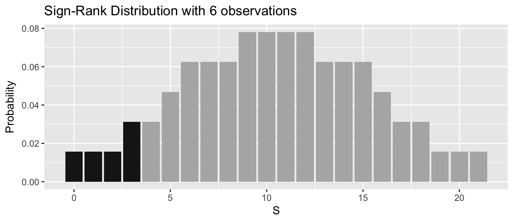

Chapter 13 Nonparametric Rank-Based Tests
library(dplyr)
library(pander)
library(ggplot2)The common statistical methods that are introduced in introductory classes rely on the condition that the distribution of the sample statistic of interest (\(\bar{x}\) or \(\hat{p}\)) is either normal or approximately normal If the population that the data is drawn from is normal, then the sample mean is normal and for the non-normal populations, if the sample size is large (n>30 is usually sufficient) then the Central Limit Theorem states that the sample mean is approximately normally distributed. We then used this normal distribution to create confidence intervals and do t-tests. If the approximate normality condition does not hold, then we must turn to some alternative analysis that has fewer necessary. Commonly we will use bootstrap and permutation based methodology in this case, but there is a large body of statistical theory created prior to the ubiquity of modern computing that is useful to know about.
We have already introduced the idea of doing a standard analysis on transformed variables (either the independent or dependent). We considered only a few simple transformations (\(log(y)\), \(log(x)\), etc) but there are more exotic transformations possible. In this chapter we will focus first on the sign transformation, which is just the sign of the value. Secondly, we will examine the rank transformation. The rank transformation takes a vector of \(n\) observations and assigns the rank ordering value to each observations. The smallest value is assigned rank \(1\), the next smallest is rank \(2\) all the way to the largest value with rank \(n\). If two or more observations have the same value, then the mean rank of the identical items is assigned to all items.
data <- data.frame( y = c(-1,-3,9,2,5,5) ) %>%
mutate( sign_value = sign(y),
rank_value = rank(y) ) %>%
arrange(y)
pander(data)| y | sign_value | rank_value |
|---|---|---|
| -3 | -1 | 1 |
| -1 | -1 | 2 |
| 2 | 1 | 3 |
| 5 | 1 | 4.5 |
| 5 | 1 | 4.5 |
| 9 | 1 | 6 |
Rank based methods rely on looking at the order of the data and not the magnitude. For example, if we have 10 independent observations from a population, all of which are greater than zero, I feel comfortable concluding that the population median is greater than zero. If nine out of ten are larger, I’d still feel comfortable about concluding the population median is greater than zero, but if I had only six out of ten observations larger than zero then I would not reject a null hypothesis that the population median was equal to ten. Because we are going to consider ranks, we naturally find our selves asking questions about the middle value of the data. Therefore it makes sense to make null and alternative hypotheses statements about the median of the population and not the mean.
These methods are typically referred to as nonparametric methods and care should be taken to recognize that these tests are not condition-less as we will require the observations to be independent and identically distributed.
Finally, there is a price to be paid for using a more general method. If the normality condition is true, these nonparametric tests will have less power to reject the null hypothesis than the corresponding method that uses normality. Therefore, the standard methods should be used when appropriate and the nonparametric alternative only used when the normality condition is substantially violated.
13.1 Alternatives to one sample and paired t-tests
We often want to take a sample of observed values and make statistical inference about the mean or median of the population that the observations came from. Suppose we have a sample of data \(z_i\) coming from a non-normal distribution and want to test if the mean \(\mu\) or median \(M\) is equal to some specified value \(\mu_{0}\) or \(M_{0}\).
The literature commonly introduces these tests as alternatives to the paired t-test. However, recall that the paired t-test was just a single-sample t-test performed on the differences between paired observations. In that case our observed data is just \(z_{i}=x_{i}-y_{i}\) for \(i=1\dots n\). Keeping with standard practice and the most likely use of these tests, we present these tests in the paired t-test context, and note that the modification to a one-sampled t-test is usually a trivial subtraction of the null hypothesis value.
13.1.1 Sign Test
This is the most easily understood of the classic nonparametric tests, but suffers from a lack of power. Typically the Wilcoxon Sign Rank test is preferred, but we present the Sign Test as it is an extremely flexible test and is a good introduction to thinking about rank based tests.
This test can be thought of as a sign transformation of the response variable followed by the desired t-test.
13.1.1.1 Hypothesis
We are interested in testing if the medians of two populations are equal versus an alternative of not equal. \[H_{0}:\,M_{1}-M_{2} = 0\] \[H_{a}:\,M_{1}-M_{2} \ne 0\] One sided tests are also possible, \[H_{a}:\,M_{1}-M_{2}>0\]
13.1.1.2 Conditions
One very nice aspect of the Sign Test is that it has very few conditions, only that the paired observations \(\left(x_{i},y_{i}\right)\) are independent and identically distributed. In particular we note that there is no symmetry condition on the distribution of \(z_{i}\).
13.1.1.3 Calculation
Calculate \(z_{i}=x_{i}-y_{i}\) and observe the sign. In the case one sample case, we observe the sign of \(z_{i}=x_{i}-M_{0}\). We define our test statistic \(T\) to be the number of positive values of \(z_{i}\). If an observation is equal zero, \(z_{i}=0\), remove it from the analysis.
13.1.1.4 Sampling Distribution
Under the null hypothesis, the two samples have the same median and so the sign of the difference, \(z_{i}\), should be negative approximately half the time and positive half the time. We could easily simulate this distribution using a permutation test, but in this case, we actually already know what this distribution is! Under the null hypothesis, if we define a positive \(z_{i}\) value to be a success, then our test statistic \(T\) has a binomial distribution with success probability \(\pi=1/2\). That is under \(H_0\), \(T\sim Binomial\left(m,\pi=\frac{1}{2}\right)\) where m is the number of non-zero \(z_{i}\) values.
13.1.1.5 Example
Suppose we have data for 7 students from two exams of a class and we want to evaluate if the first exam was harder than the second.
| Student | Exam1 | Exam2 | diff | sign |
|---|---|---|---|---|
| 1 | 66 | 71 | -5 | -1 |
| 2 | 74 | 76 | -2 | -1 |
| 3 | 85 | 84 | 1 | 1 |
| 4 | 81 | 85 | -4 | -1 |
| 5 | 93 | 93 | 0 | 0 |
| 6 | 88 | 90 | -2 | -1 |
| 7 | 79 | 78 | 1 | 1 |
Here we have \(t=2\) positive values out of \(m=6\) nonzero observations.
Recall that a p-value is the probability of seeing your data or something more extreme given the null hypothesis is true. In this case our p-value is the probability that \(T\le2\). Using the binomial distribution, the p-value for this test is
\[p-value=P\left(T\le2\right)=\sum_{i=0}^{2}P\left(T=i\right)=0.34375\]
which can be found using the binomial distribution in R
pbinom( 2, size=6, prob=1/2 )## [1] 0.34375or via simulation
t <- 2
m <- 6
PermDist <- mosaic::do(1000) *
sum( rbinom(m, size=1, prob=1/2) )
pvalue <- mean( PermDist <= t )
pvalue## [1] 0.35As usual, if we had been interested in a two-sided alternative, we would multiply the p-value by two.
13.1.2 Wilcoxon Sign Rank Test
While the sign test is quite flexible, ignoring the magnitude of the differences is undesirable. The Wilcoxon Sign Rank test will utilize that information and is typically a more powerful test. The idea will be to transform the response variable using the rank transformation and then do a permutation based t-test. The classic Wilcoxen Sign test removes cases where the difference is zero, but when we perform the test using permutations, we could just as easily keep them.
13.1.2.1 Hypothesis
As with the Sign Test, we are interested in testing if the medians of two populations are equal versus an alternative of not equal. \[H_{0}:\,M_{1}-M_{2} = 0\] \[H_{a}:\,M_{1}-M_{2} \ne 0\] One sided tests are also possible, \[H_{a}:\,M_{1}-M_{2} > 0\] \[H_{a}:\,M_{1}-M_{2} < 0\]
13.1.2.2 Conditions
As with the Sign Test, we require that the paired observations \(\left(x_{i},y_{i}\right)\) are independent and identically distributed. We further impose an additional condition the the differences are symmetric around some value.
13.1.2.3 Calculation
As with the Sign Test, we calculateIn the case one sample case, calculate and order the values \(z_{i}=x_{i}-M_{0}\) or \(z_{i}=x_{i}-y_{i}\). Next order the absolute values \(\left|z_{i}\right|\), and as in the Sign Test, observations with z_{i}=0 are removed from the data set. Using the sorted values calculate the rank R_{i} of each observation where the rank of 1 is the observation with the smallest magnitude, and m is corresponds to the largest observation. In the case of ties, use the average rank.
Next define \[\phi_{i}=\begin{cases} 0 & \;\;\textrm{if}\;z_{i}<0\\ 1 & \;\;\textrm{if}\;z_{i}>0 \end{cases}\]
to be an indicator function denoting if \(z_{i}>0\). Finally we define \[W_{+}=\sum_{i=1}^{m}\phi_{i}R_{i}\] and \[W_{-}=\sum_{i=1}^{m}\left(1-\phi_{i}\right)R_{i}\] so that \(W_{+}\) is the sum of the ranks of the positive \(z_{i}\) values and \(W_{-}\) is the sum of the ranks of the negative \(z_{i}\) values. If there are no positive ranks, then define \(W_{+}=0\). Likewise if there are no negative ranks, define \(W_{-}=0\). Let \(S=\min\left[W_{+},W_{-}\right]\). (For the alternative \(M_{1}-M_{2}>0\) then \(S=W_{-}\). For the alternative \(M_{1}-M_{2}<0\) use \(S=W_{+}\))
13.1.2.4 Sampling Distribution
Under the null hypothesis, we would expect \(W_{+}\) and \(W_{-}\) to be approximately the same. Unfortunately the distribution of \(S\) under the null hypothesis is not a distribution that we recognize, but it can be calculated (via brute force) and is known as the SignRank distribution. The quantiles of the distribution can be found in tables in statistics books or using R using the standard d,p,q functions, e.g. psignrank() where the sample size n is the necessary distribution parameter. Alternatively, we could just simulate the distribution under the null hypothesis by randomly assigning group labels to the ranks \(1,2,\dots,n\).
13.1.2.5 Example
We again use the student test data and we wish to test if median of Exam 1 is less than the median of Exam 2. First we calculate the differences, remove the zeros, and calculate the ranks on the magnitude of the diffeences.
data <- data.frame(Student=1:7,
Exam1 = c(66,74,85,81,93,88,79),
Exam2 = c(71,76,84,85,93,90,78)) %>%
mutate(diff = Exam1-Exam2) %>%
filter( diff != 0 ) %>% #remove the zeros!
mutate( r = rank(abs(diff))) # rank on magnitude!
pander(data)| Student | Exam1 | Exam2 | diff | r |
|---|---|---|---|---|
| 1 | 66 | 71 | -5 | 6 |
| 2 | 74 | 76 | -2 | 3.5 |
| 3 | 85 | 84 | 1 | 1.5 |
| 4 | 81 | 85 | -4 | 5 |
| 6 | 88 | 90 | -2 | 3.5 |
| 7 | 79 | 78 | 1 | 1.5 |
Next we cacluate \[W_{-} = 6+5+3.5+3.5=18\] and \[W_{+} = 1.5+1.5=3\] and thus we will use \(S=3\).
To calculate a p-value we want to find \(P\left(S\le3\right)\).

which we do using a table look up in R. Notice I could look up either the probability of observing a 3 or less or the probability of observing 18 or more.
# less than or equal to 3
psignrank(3, 6)## [1] 0.078125# greater than or equal to 18
1 - psignrank( 17, 6 )## [1] 0.078125If we had chosen to do this using permutations we could have calculated:
PermDist <- mosaic::do(1000)*{
}
data## Student Exam1 Exam2 diff r
## 1 1 66 71 -5 6.0
## 2 2 74 76 -2 3.5
## 3 3 85 84 1 1.5
## 4 4 81 85 -4 5.0
## 5 6 88 90 -2 3.5
## 6 7 79 78 1 1.5Example in R
The function that we will use for both Wilcoxon’s Sign Rank and Rank Sum tests is wilcox.test(). You can pass the function either one vector of data or two and can indicate if the test should be a paired test.
<<>>=
Notice that the p-value is slightly different than when we used the signrank() distribution. This is due to an approximation to the actual sign rank distribution being used whenever ties occur in the data. Because the only tie occurred in the same group, we could have used the actual distribution, but the function wilcox.test immediately jumped to the approximation.
Also notice how we are interested in testing if exam 1 was harder than exam 2 and so we want the alternative to beH_{a}:,;exam_{1}
Calculation
Combine observations from both samples and order them. In the case of ties, assign the average rank. Next define T_{1} as the sum of the ranks for observations in sample 1 and likewise define T_{2}.
Sampling Distribution
Under the null hypothesis, T_{1} and T_{2} should be approximately equivalent and if they have an extremely large difference we should reject the null hypothesis. We’ll compare the smaller of T_{1} and T_{2} against the null distribution and the null distribution quantiles can be found in tables in various statistics books or using R.
Example
Ten tents using plain camouflage (group 1) and ten using patterned camouflage (group 2) are set up in a wooded area, and a team of observers is sent out to find them. The team reports the distance at which they first sight each tent until all 20 tents are found. The distances at which each tent is detected are reported:
We calculated T_{1} = {j=1}^{n{1}}R_{1j}=4.5+9.5+12+14+15+16+17+18+19+20=145 T_{2} = {j=1}^{n{2}}R_{2j}=1+2+3+4.5+6+7.5+7.5+9.5+11+13=65
and compare T_{2} to the sampling distribution of under the null hypothesis.
Unfortunately the literature is somewhat inconsistent as to the definition of T_{1} and T_{2}. It seems that Wilcoxon’s original paper used the unadjusted ranks while subsequent tables subtracted the minimum rank. Further complicating the matter is that there are corrections that should be made if there are too many ties. The end result is that calculating the test statistic by hand and comparing it to the “right” Wilcoxon distribution is troublesome.
The Wilcoxon Rank Sum test is completely equivalent to the Mann-Whitney test and the Mann-Whitney test became more widely used because it dealt with unequal sample sizes more easily. Since the tests are equivalent, disturbingly, some software programs will return the test statistic for one when the user asked for the other. While the p-values will be identical, the test statistic will not.R returns the results of the Mann-Whitney test from the function wilcox.test() in the two sample case.
1.2.2 Mann-Whitney
We have the same conditions and hypotheses as the Wilcoxon Rank Sum Test. For notational convenience, let x_{i} be an observation from sample 1 and y_{j} be an observation from sample 2.
Calculation
For all n_{1}n_{2} combinations of pairs of observations (x_{i},y_{j}), let U be the number of times x_{i}>y_{j}. If they are equal, count the combination as 1/2.
Sampling Distribution
Under the null hypothesis, we would expect Un_{1}n_{2}/2. If U is too big or too small, we should reject the null hypothesis. Give the large sample normal approximation and notice that it is close to the approximation of a binomial. The U-distribution is close to binomial, but not quite due to possibilities of ties.
Example - Camouflage Tents
The Mann-Whitney U statistic is 10, with 9 instances where a group 1 observation is less than a group 2 observation and two instances of ties.
<<>>=
1.3 Alternatives to 1-way ANOVA
An extension to the Mann-Whitney U-test is known as the Kruskal-Wallis test. This will test if the ranks are evenly distributed among k groups or if there is at least one group with average rank that is statistically different than the other groups.
conditions
The conditions for the Kruskal-Wallis are the same as for the Mann-Whitney with all the observations are independent (both between and within samples).
Hypothesis
Again our hypotheses
H_{0}:, M_{1}=M_{2}==M_{k} H_{a}:,
Calculation
Combine observations from all k samples and rank/order them. In the case of ties, assign the average rank. The Kruskal-Wallis test statistic is H=(n-1)where n_{i} is the number of observations in group i, n is the total number of observations n=n_{1}+n_{2}++n_{k}, {R}{}=(n+1) is the average of all the ranks, and {R}{i} is the average rank within group i.
Sampling Distribution
Under the null hypothesis the average rank within a group {R}{i} should be similar to the overall average rank {R}{} and so large discrepancies between those will lead to a large value of H and so we’ll reject if H is big enough. Under the null hypothesis, H{k-1}^{2} which is the Chi-squared distribution with k-1 degrees of freedom. This is only an approximation and will be more appropriate as n{i} gets large for every group. The common rule of thumb is that we need at least n_{i}5 for all groups.
Example - Levi
We will examine the amount of waste produced at k=5 different plants that manufacture Levi Jeans. The Waste amount is the amount of cloth wasted in cutting out designs compared to a computer program, so negative values for Waste indicate that the human engineer did a better job planning the cuts than the computer algorithm. The data are available in the file “Levi.csv” available on the GitHub for the book. There are two columns, Plant and Waste. <<fig.height=2.5>>=
Due to the large outliers in Plant 2, I’m not happy about doing a standard ANOVA analysis and we’ll instead do a Kruskal-Wallis test for equality of the medians in each group.
<<>>=
<<>>=
The Kruskal-Wallis test has a very interesting theoretical motivation. Notice that the test statistic H=(n-1)looks very similar to the test statistic in the usual ANOVA model, only instead of working with the raw y_{ij} values, we are using the ranks!. We can do a regular ANOVA and look at the SSE_{diff} and SSE_{simple} and notice those are the exact same terms as the Numerator and Denominator.<<>>=
This is a very interesting thing to notice. Many of the classic non-parametric tests can be regarded as doing standard tests not on the actual y_{i} values but rather on the rank transformation of those responses. In this case you would might have expected the test statistic to be based on SSE_{diff} / SSE_{complex} instead, but that quantity has an F-distribution if the data is normally distributed, and the ranks certainly are not. Instead we consider SSE_{diff} / SSE_{simple} which is analogous to an R^{2} value.
1.4 Exercises
The length of time it takes me to get home in the evening is highly variable. Below are the 8 independent observations of the length of time (in minutes) between when I told my wife I was leaving my office to when I arrived home.Use the Sign Test to test the null hypothesis that the median commute time is 20 minutes vs the alternative that it is greater than 20 minutes.
After a mining operation is completed, the mining company is (theoretically) required to restore the land to the prior condition. Suppose that soil pH measurements are taken at 7 randomly selected locations prior to the mining and after the mining is complete and restoration has occurred, soil pH measurements for those same plots are taken again. Perform a Wilcoxen Sign Rank test on this paired data and test the null hypothesis that the median soil pH is the same versus that it has increased after the mining.
By hand, calculate the Wilcoxen Sign Rank test statistic.
Compare your test statistic to the signrank distribution in R and calculate a p-value.
Repeat the above analysis using the wilcox.test() function in R.
- The ratio of DDE (related to DDT) to PCB concentrations in bird eggs has been shown to have had a number of biological implications. The ratio is used as an indication of the movement of contamination through the food chain. Suppose the following ratios for eggs are reported for terrestrial and aquatic feeding birds.We will perform a Mann-Whitney test the null hypothesis of the median terrestrial ratio is equal to the aquatic ratio vs the alternative that they are not equal.
We are using the Mann-Whitney test due to the non-normality of the data. Looking at the raw data, what is indicative of that non-normality?
By hand, calculate the Mann-Whitney test statistic (give enough details to indicate how the statistic is calculated).
Use R to calculate the p-value for the test using the wilcox.test() function.
- Load the built in data set airquality in R. This gives the daily air quality measurements in New York in the summer of 1973. We are interested in testing if the median ozone level is the same for all five months (May-September).
Fit the usual ANOVA model using the following code<<>>=Examine the QQ-plot of the residuals for assessing normality. Also use the Shapiro-Wilks test for assessing normality of the residuals. What do you conclude?
Use R to perform a Kruskal-Wallis test to determine if the median ozone levels are the same for each month.